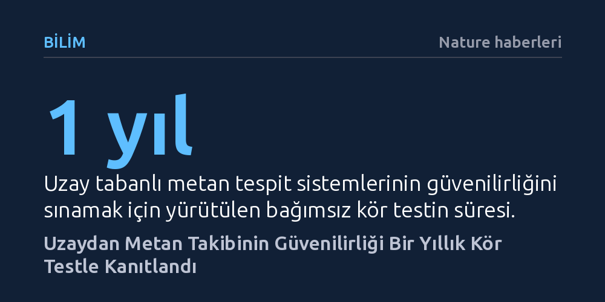

BILIM · Nature haberleri · 2026-10-15
Bir yıl süren kapsamlı kör testler, uzaydan metan sızıntılarını izleyen uyduların emisyonları yüksek doğrulukla tespit edip ölçebildiğini kanıtladı. Bu sonuç, uydu verilerinin küresel iklim politikalarında ve emisyon denetiminde güvenilir bir kanıt tabanı olarak kullanılabileceğini ortaya koyuyor.
Uzaydan yapılan emisyon takibinin bağımsız kör testlerle doğrulanması, petrol ve gaz sektöründeki metan kaçaklarının artık gizlenemeyeceğini ve uydu verilerinin hukuki yaptırımlara zemin hazırlayacağını gösteriyor.

Metan gazı, atmosferde karbondioksite kıyasla çok daha kısa süre kalmasına karşın ilk yirmi yıllık zaman ufkunda seksen katı aşan bir küresel ısınma etkisi yaratıyor. Bu nedenle petrol sahalarından, doğalgaz boru hatlarından ve kömür işletmelerinden atmosfere sızan kaçakların hızla tespit edilmesi, iklim kriziyle mücadelenin en acil hedeflerinden biri haline geldi. Son yıllarda yörüngeye fırlatılan yeni nesil uydular, yeryüzündeki bu görünmez kaçakları uzaydan tespit edebildiklerini öne sürerek emisyon denetiminde yeni bir dönem başlattı.
Ancak bu teknolojik ilerleme beraberinde kritik bir güvenilirlik sorusunu getirdi: Uydulardan gelen veriler ne kadar doğruydu? Uydu işletmecilerinin kendi algoritmalarıyla hesapladığı emisyon miktarları tarafsız bir yöntemle denetlenmediği sürece, hükümetlerin bu ölçümlere dayanarak yasal yaptırımlar uygulaması ya da şirketlerin karbon ayak izini bu yolla teyit etmesi mümkün değildi. Uzay tabanlı gözlemlerin bilimsel ve hukuki geçerlilik kazanması için bağımsız ve sıkı bir sınamadan geçmesi şarttı.
Stanford Üniversitesi ve Michigan Üniversitesi araştırmacılarının liderliğinde yürütülen çalışma, uzay tabanlı metan ölçüm sistemlerini bugüne kadarki en kapsamlı denetime tabi tuttu. Bilim insanları, yer seviyesinde kurdukları kontrollü tesisler aracılığıyla debisi ve süresi kesin olarak bilinen metan salımları gerçekleştirdiler. Bu deneyin en belirleyici özelliği tam bir kör test protokolüyle uygulanmasıydı; yani uydu operatörlerine salımların konumu, zamanı ve miktarı hakkında hiçbir ön bilgi verilmedi.
Bir yıla yayılan araştırma süresince farklı yörüngelerdeki kamu ve özel sektör uyduları test bölgesini tarayarak ham tayfölçüm verilerini işledi. Operatörler saptadıkları sızıntıların yerini ve debi tahminlerini bağımsız değerlendirme heyetine sundu. Yer istasyonundaki kesin akış verileri ile uyduların bildirdiği tahminler eşleştirilerek her sistemin tespit eşiği, ölçüm duyarlılığı ve yanılma payı tarafsız biçimde hesaplandı.
Elde edilen bulgular, uzay tabanlı metan tespit uydularının genel olarak yüksek bir doğruluk ve güvenilirlikle çalıştığını ortaya koydu. Uydular, özellikle orta ve büyük ölçekli enerji altyapısı sızıntılarını saptamada yüksek başarı gösterdi ve tahmin edilen emisyon debileri yerdeki gerçek akış değerleriyle güçlü bir uyum sergiledi. Bu durum, uydu verilerinin rasgele tahminlerden değil, sağlam fiziksel temellere dayanan algoritmalardan beslendiğini doğruladı.
Bununla birlikte kör test, teknolojinin aşması gereken bazı sınırları da aydınlattı. Düşük debili küçük sızıntıların yüzey yansımaları ve arka plan gürültüsü arasında kaybolabildiği, ayrıca kuvvetli rüzgâr gibi değişken hava olaylarının salım miktarını hesaplamada sapmalara yol açabildiği belirlendi. Ancak sistemin yanlış alarm oranının oldukça düşük kalması, uyduların tespit ettiği sızıntıların sahada gerçek bir karşılığı olduğunu kesinleştirdi.
Araştırmanın kanıtladığı güvenilirlik, fosil yakıt sektörünün denetiminde ve uluslararası iklim diplomasisinde yeni bir sayfa açıyor. Bugüne kadar şirketlerin kendi beyanlarına dayanan emisyon raporlamaları, sahada tespit edilen fiili durumla sıkça çelişiyordu. Uyduların bağımsız denetim gücü, petrol ve gaz sahalarındaki altyapı arızalarının ve kaçakların artık gizlenemeyeceğini gösteriyor.
Özellikle Avrupa Birliği ve Amerika Birleşik Devletleri'nin yürürlüğe koyduğu sınırda karbon mekanizmaları ve metan vergileri düşünüldüğünde, kör testten başarıyla geçmiş uydu verileri yasal delil niteliği kazanacak. Bu durum, enerji üreticilerini bakım süreçlerini hızlandırmaya ve sızıntıları ivedilikle onarmaya mecbur bırakacak güçlü bir piyasa baskısı yaratıyor.